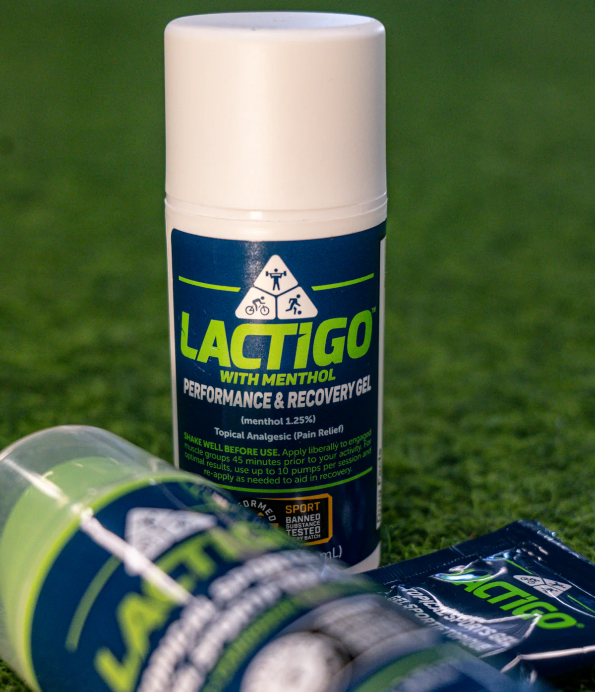

LactiGo es un gel tópico de carnosina, magnesio y mentol que se aplica directo en la piel antes o después de entrenar, como parte de tu rutina de bienestar.
Envío disponible · Compra segura en el sitio oficial

Como visto en
Tres ingredientes, una aplicación simple.
Acompaña el cuidado de tus músculos. Es un dipéptido que tu cuerpo ya produce naturalmente.
Sensación fresca y de alivio al aplicarlo. El frescor que sientes viene del mentol natural.
Un mineral esencial para tu rutina diaria de bienestar y recuperación.
Una capa delgada directo en la piel: piernas, brazos, espalda u hombros.
Masajea suave hasta absorber. Sin residuos grasosos.
Úsalo 30–45 minutos antes de entrenar, o justo después.
Hazlo parte de tu rutina diaria de bienestar.
Atletas reales, experiencias reales.
"LactiGo ha cambiado mi juego por completo. Lo uso antes de cada partido y la diferencia es notable."
— Jay Beagle, campeón de la Stanley Cup · 12 años en la NHL"LactiGo impulsa mi rendimiento en cada competencia."
— Mariah Kelly, atleta"Mi recuperación cambió por completo desde que lo uso."
— Atleta de élite"Esencial en su entrenamiento olímpico."
— Cindy Sember, atleta olímpica"Todos mis clientes lo usan en su rutina."
— Coach de fitness"Un cambio total para mis carreras largas."
— Corredora de maratónTestimonios de usuarios reales de LactiGo. Las experiencias individuales pueden variar.
Jay Beagle
Campeón Stanley Cup · 12 años en la NHL
Mariah Kelly
Atleta
Cindy Sember
Atleta olímpica
No. Es un gel tópico: se aplica en la piel, no se ingiere.
30–45 minutos antes de entrenar o justo después, como parte de tu rutina.
Sí: Original y Menthol. Ambas con carnosina y magnesio.
No. Este producto no sustituye el consejo de tu profesional de la salud.
Únete a miles de personas activas que ya lo hacen parte de su día.
Comprar LactiGoCompra segura en el sitio oficial de LactiGo